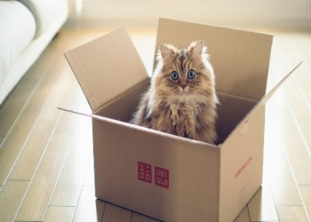
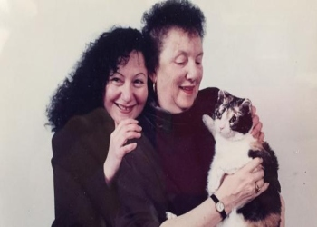

La razón por la que las cajas resultan irresistibles para los gatos
Desde la reducción del estrés a sus hábitos cazadores, diferentes
teorías intentan explicar este
curioso
comportamiento.

Existen varias teorías, que explican porque los mininos se vuelvan locos con
las cajas, la
mayoría se
deben a su instinto salvaje innato, ese que hace que incluso los gatos domésticos se comporten
como
lo
harían en libertad.
Una de las teorías que podría explicar la razón de que los gatos se sientan tan
atraídos a
espacios
encerrados, sería porque pueden controlar más el lugar en el que están, es decir, les ofrece
comodidad y
seguridad al sólo tener que estar pendientes de un punto.
Elena Carloni, etóloga de la Universidad de Bolonia, en Italia, y una de las
mayores expertas en
gatos de
Europa, lo explica así: «Una caja de cartón ofrece a los felinos un escondite cuando no quieren
ser
molestados, por lo que reduce su ansiedad y mejora su salud».
Carloni ha estudiado el estrés que sufren los gatos en los refugios de
adopción, patología que
debilita
la salud del gato y acorta su esperanza de vida, y ha constatado cómo introducir cajas de cartón
reduce
este peligro de forma significativa. No solo eso: el gato adoptado se acostumbra antes a un
hogar
nuevo
cuando hay una caja. También hay menos probabilidades de que reacciones de forma agresiva, por
puro
miedo, y está más interesados en interactuar con los humanos.
Esto tiene sentido cuando uno aprende que la primera reacción de un gato frente
a una situación
estresante es retroceder y esconderse. «Las cajas enriquecen el espacio donde viven los gatos,
bajan
los
niveles de corticoides relacionados con la ansiedad y mejoran la calidad de vida del felino»,
dice
Carloni.
No se ha establecido un motivo definitivo sobre el porqué los felinos buscan
encerrarse en cajas,
recipientes o en el espacio entre un mueble y la pared. Pero, es claro que si un gato cabe en un
lugar,
ahí se va a
sentar.
El origen del nombre Karen, entre las dueñas de Gatos
La historia de la gata Scarlett, que salvó a sus cachorros de un
incendio, populariza y dulcifica el
término Karen, hasta ahora despectivo.

El 30 de marzo de 1996, en el barrio de Brooklyn, en Nueva York, se produjo un
incendio en un
garaje
abandonado, cuando el fuego estaba ya controlado el bombero David Giannelli se percató de que
una
gata
entraba y salía del local en llamas. Repitió el trayecto hasta en cinco ocasiones: estaba
sacando
uno a
uno a sus cachorros. Según relata Giannelli, en las últimas incursiones estaba ya tan afectada
por
el
humo y las llamas que iba chocando el hocico contra ellos para reconocerlos. Logró sacarlos a
todos.
iannelli entregó los seis animales a la North Shore Animal League, asociación
fundada en 1944,
que se
hizo cargo de ellos. Cuando lograron curarlos comenzó el siguiente reto: encontrarles una
familia a
cada
uno de los cinco gatos —uno de los cachorros murió a causa de las heridas—. El problema, al
contrario de
lo que suele suceder con las adopciones de animales, era el exceso de candidaturas. En poco más
de
un
mes se habían recibido más de 6.000 cartas. La historia de Scarlett —así se llamaba la mamá
gata—
ocupó
páginas en los periódicos y minutos en las radios y televisiones de varios países. La popular
presentadora Oprah Winfrey ofreció billetes en primera clase a Chicago para los gatos, con el
objetivo
de que participaran en su programa especial del Día de la Madre. El refugio no accedió.
De entre las miles de cartas recibidas para adoptar a Scarlett se seleccionaron
las que cumplían
los
requisitos —se pedía que se explicara en un párrafo los motivos—. Quedaron, primero, cinco
finalistas.
Después, únicamente tres. “Fue Scarlett la que decidió, porque se quedaba todo el rato encima de
mi
carta. O, al menos, eso me dijeron…”, explica al otro lado de la conexión por videollamada de
Facebook
Karen Wellen, la neoyorkina que adoptó a la gata en 1996. Trabajadora autónoma del mundo de la
publicidad, había sufrido un grave accidente de coche —”no conducía yo”, matiza— unos años
antes. Y
eso
era precisamente lo que contaba en su carta. “Creía que no iba a tener ninguna opción de
adoptarla.
Estamos hablando de miles y miles de cartas, en una época en la que no se utilizaba la
tecnología
como
se hace hoy. Poca gente tenía Internet, móviles o impresora…”, señala. Se organizó un gran
evento de
adopción al que acudieron numerosos medios de comunicación. “¡Llegué a entrar en directo para la
BBC!.
Fue la primera vez que vimos los colores de Scarlett. Hasta entonces, todas las imágenes habían
sido
en
blanco y negro.”, recuerda.
Scarlett falleció el 11 de octubre de 2008. Su recuerdo se mantiene vivo en la
casa de Karen y en
la
página de Facebook, que cuenta con más de 23.000 seguidores. Y, en paralelo, ha crecido otra
historia
global, especialmente en el ámbito iberoamericano. Las redes sociales, en las que existen
numerosos
perfiles que personifican a los gatos —los del español Kratos, la chilena Sakura o el del
colombiano
Tommy el gato mono serían un buen ejemplo— han extendido el uso del término “Karen” para las
mujeres
que
conviven con gatos y de “Karen Macho”, para los hombres. Con una sutil mezcla de los dones de la
felinidad —esto es, displicencia, superioridad moral, ironía y gracia natural— los mininos
protagonistas
de los vídeos han popularizado el término Karen para hablar —y criticar; y mandar— a sus dueños.
“Hace algún tiempo, empecé a darme cuenta de que entraban nuevos seguidores
desde México, Chile,
Colombia… no entendía el motivo. Un seguidor me escribió y me lo explicó. Me parece muy
divertido. Y
más
teniendo en cuenta que en Estados Unidos Karen es poco menos que un insulto, porque se refiere a
una
mujer de clase media-alta arrogante, agresiva, cansada de todo…Cuando vi que tenía un
significado
distinto… y tan bonito… me hizo mucha ilusión”.
Preguntada sobre si se plantea adoptar de nuevo, confiesa que tiene dudas: “mi
día a día ahora es
complicado. En dos años he perdido a mis padres, he tenido algún problema de salud… creo que de
momento
seguiré cuidando de las colonias callejeras a las que atiendo”. Karen actualiza regularmente la
página
de Facebook de Scarlett y sube imágenes de gatos y otros animales de la fauna urbana neoyorkina.
¿Por
qué no se lanza a la conquista de las demás redes sociales? “Intento mantenerlo lo más sencillo
posible.
Solo Facebook. Ni Instagram, ni Twitter ni Tiktok. Si abriera todos esos perfiles, no podría
levantarme
del ordenador. Necesitaría una segunda vida”. Necesitaría, en concreto, ser un gato. Para algo
tienen
hasta siete.
Siete cosas que hacen feliz a tu gato
Cómo crear un entorno adaptado al felino, con accesorios para afilar
sus garras o para hacer sus
deposiciones.
Los gatos, más que adaptarse a un hogar, esperan que sea la casa quien se
amolde a sus gustos. Ya
se
encargarán ellos de arrebatar el mejor sillón a sus dueños, de conquistar las alturas para tener
el
territorio bien controlado o de afilar sus uñas en el carísimo mueble más apreciado de la casa.
Estas
leves contraindicaciones de la convivencia gatuna se pueden minimizar, si contamos con un
entorno
adaptado con varios accesorios para que el gato dé rienda suelta a sus instintos felinos.
1. Un rascador para mantener las garras en forma. Un entorno hogareño adaptado
al gato, donde
tenga
todo
lo que necesita no puede prescindir de un rascador donde el gato afile sus uñas. “Necesita
hacerlo
porque es un depredador que caza con sus garras y trepa a lugares altos con ellas”, explica
Javier
Zorriqueta, veterinario y responsable de una clínica adaptada a gatos. Los gatos tienen sus
gustos
particulares y es posible que no se acierte a la primera con el rascador adquirido. Un truco
para
dar
con el afilador de uñas que le guste es fijarse en los objetos que suele escoger en casa para
rascar
con
sus garras. De esta forma, se puede buscar uno de similares características. No obstante, suele
ocurrir
que una vez que el gato escoge un objeto de la casa para afilarse las uñas, no cambie de
parecer. De
ser
así, es preferible dejar que lo haga en el lugar elegido, a cambio de que no las afile en ningún
otro
sitio de la casa. Existe un accesorio que cubre dos necesidades de los gatos. es el denominado
árbol
rascador, que combina varias alturas para que el felino satisfaga su afán trepador y materiales
donde
puede afilar sus uñas.
2. Un juguete para dar rienda suelta al instinto depredador. A los gatos les
gusta jugar, sobre
todo
de
cachorros. Pero son exigentes. “Tienen sus propios gustos y hay que adquirir el juguete que le
guste
al
gato, no al dueño”, recomienda el veterinario Javier Zorriqueta. En el mercado hay objetos
lúdicos
pensados específicamente para felinos, pero habrá que observar varios detalles a la hora de
elegirlos,
como si en casa el gato prefiere los juguetes que ruedan, hacen ruido o son de determinados
materiales
como tela, cartón o bien escoge los peluches.
3. La bandeja higiénica, adecuada y en un lugar discreto. Un accesorio que no
puede faltar en una
casa
con gatos es el arenero o el lugar donde hace las deposiciones. La bandeja debe estar colocada
lejos
de
su comida y alimento y en un lugar discreto, donde el gato no se sienta observado cuando la usa.
La
arena que se utiliza para la bandeja es específica, porque debe tener propiedades absorbentes,
tanto
del
olor como de la humedad. Conviene reponerla habitualmente, así como limpiar la bandeja.
4. Una cama cómoda y situada en un lugar tranquilo. A los gatos les gusta
dormir y aunque son
ellos
quienes eligen el lugar de la casa donde hacerlo, conviene proveerles de una cama cómoda y
mullida
que
esté situada en un lugar donde no se le moleste. Si la cama es tipo iglú o cerrada, permitirá al
gato
sentirse más protegido y disfrutar de los momentos en que elija estar solo.
5. Un cepillo para el pelo. A los felinos les gusta mantener su pelaje limpio y
acondicionado por
lo
que
se acicalan a menudo, lo que implica que parte de su pelo va a parar al estómago. Echarles una
mano
para
que se sientan a gusto con su pelo es tan sencillo como tener un cepillo en casa con el que
peinarles.
De esta forma, se consigue retirar gran parte del pelo suelto que puedan ingerir. En general,
les
gusta
y relaja el masaje con el cepillo.
6. Alimento adecuado para su edad, tamaño y estilo. Una dieta adecuada favorece
su salud. El
veterinario
es quien mejor nos puede aconsejar sobre el tipo y cantidad de alimento que necesita el gato,
según
factores como su edad, tamaño y forma de vida. Es decir, no se puede alimentar igual a un
cachorro
que a
un gato adulto o de cuatro kilos que de diez. Asimismo, el alimento para un felino muy activo,
con
acceso al exterior de la vivienda, no puede ser el mismo que para uno casero que tiende al
sedentarismo.